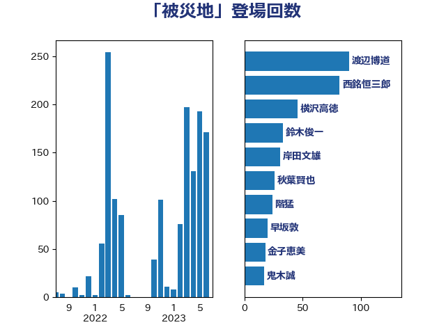

単語「被災地」

| 平沢勝栄 | 自由民主党 | 120 回 |
| 西銘恒三郎 | 自由民主党 | 82 回 |
| 階猛 | 立憲民主党 | 51 回 |
| 横沢高徳 | 立憲民主党 | 42 回 |
| 森まさこ | 自由民主党 | 36 回 |
| 金子恵美 | 立憲民主党 | 31 回 |
| 赤羽一嘉 | 公明党 | 30 回 |
| 佐々木さやか | 公明党 | 25 回 |
| 菅義偉 | 自由民主党 | 25 回 |
| 武田良太 | 自由民主党 | 16 回 |
| 小宮山泰子 | 立憲民主党 | 15 回 |
| 小沢雅仁 | 立憲民主党 | 15 回 |
| 岸田文雄 | 自由民主党 | 15 回 |
| 田名部匡代 | 立憲民主党 | 15 回 |
| 岡本あき子 | 立憲民主党 | 14 回 |
| 上川陽子 | 自由民主党 | 12 回 |
| 堀内詔子 | 自由民主党 | 12 回 |
| 杉久武 | 公明党 | 12 回 |
| 野上浩太郎 | 自由民主党 | 12 回 |
| 横山信一 | 公明党 | 11 回 |
| 紙智子 | 日本共産党 | 11 回 |
| 足立敏之 | 自由民主党 | 11 回 |
| 野田聖子 | 自由民主党 | 11 回 |
| 長友慎治 | 国民民主党 | 11 回 |
| 芳賀道也 | 国民民主党 | 10 回 |
| 萩生田光一 | 自由民主党 | 10 回 |
| 和田政宗 | 自由民主党 | 9 回 |
| 岸真紀子 | 立憲民主党 | 9 回 |
| 小熊慎司 | 立憲民主党 | 8 回 |
| 橋本聖子 | 無所属 | 8 回 |
| 高橋光男 | 公明党 | 8 回 |
| 高橋千鶴子 | 日本共産党 | 8 回 |
| 丸川珠代 | 自由民主党 | 7 回 |
| 國重徹 | 公明党 | 7 回 |
| 平木大作 | 公明党 | 7 回 |
| 石井苗子 | 日本維新の会 | 7 回 |
| 藤原崇 | 自由民主党 | 7 回 |
| 音喜多駿 | 日本維新の会 | 7 回 |
| 亀岡偉民 | 自由民主党 | 6 回 |
| 北側一雄 | 公明党 | 6 回 |
| 岩渕友 | 日本共産党 | 6 回 |
| 斉藤鉄夫 | 公明党 | 6 回 |
| 早坂敦 | 日本維新の会 | 6 回 |
| 末松信介 | 自由民主党 | 6 回 |
| 梅村みずほ | 日本維新の会 | 6 回 |
| 浜口誠 | 国民民主党 | 6 回 |
| 田村貴昭 | 日本共産党 | 6 回 |
| 近藤和也 | 立憲民主党 | 6 回 |
| ながえ孝子 | 無所属 | 5 回 |
| 加田裕之 | 自由民主党 | 5 回 |
| 古川元久 | 国民民主党 | 5 回 |
| 吉川赳 | 無所属 | 5 回 |
| 大口善徳 | 公明党 | 5 回 |
| 大西英男 | 自由民主党 | 5 回 |
| 室井邦彦 | 日本維新の会 | 5 回 |
| 小野田紀美 | 自由民主党 | 5 回 |
| 山口那津男 | 公明党 | 5 回 |
| 庄子賢一 | 公明党 | 5 回 |
| 枝野幸男 | 立憲民主党 | 5 回 |
| 玄葉光一郎 | 立憲民主党 | 5 回 |
| 細野豪志 | 自由民主党 | 5 回 |
| 若宮健嗣 | 自由民主党 | 5 回 |
| 野中厚 | 自由民主党 | 5 回 |
| 梶山弘志 | 自由民主党 | 4 回 |
| 石井啓一 | 公明党 | 4 回 |
| 石井正弘 | 自由民主党 | 4 回 |
| 美延映夫 | 日本維新の会 | 4 回 |
| 若松謙維 | 公明党 | 4 回 |
| 金子恭之 | 自由民主党 | 4 回 |
| 青木愛 | 立憲民主党 | 4 回 |
| 三木圭恵 | 日本維新の会 | 3 回 |
| 三谷英弘 | 自由民主党 | 3 回 |
| 大塚耕平 | 国民民主党 | 3 回 |
| 小池晃 | 日本共産党 | 3 回 |
| 小渕優子 | 自由民主党 | 3 回 |
| 山崎誠 | 立憲民主党 | 3 回 |
| 江島潔 | 自由民主党 | 3 回 |
| 泉田裕彦 | 自由民主党 | 3 回 |
| 石井章 | 日本維新の会 | 3 回 |
| 礒崎哲史 | 国民民主党 | 3 回 |
| 神谷裕 | 立憲民主党 | 3 回 |
| 秋野公造 | 公明党 | 3 回 |
| 竹内真二 | 公明党 | 3 回 |
| 茂木敏充 | 自由民主党 | 3 回 |
| 荒井優 | 立憲民主党 | 3 回 |
| 近藤昭一 | 立憲民主党 | 3 回 |
| 下村博文 | 自由民主党 | 2 回 |
| 井上英孝 | 日本維新の会 | 2 回 |
| 伊藤信太郎 | 自由民主党 | 2 回 |
| 伊藤忠彦 | 自由民主党 | 2 回 |
| 佐藤啓 | 自由民主党 | 2 回 |
| 塩川鉄也 | 日本共産党 | 2 回 |
| 塩村あやか | 立憲民主党 | 2 回 |
| 大野泰正 | 自由民主党 | 2 回 |
| 安江伸夫 | 公明党 | 2 回 |
| 宗清皇一 | 自由民主党 | 2 回 |
| 小沼巧 | 立憲民主党 | 2 回 |
| 小泉進次郎 | 自由民主党 | 2 回 |
| 岩田和親 | 自由民主党 | 2 回 |
| 平口洋 | 自由民主党 | 2 回 |
| 新妻秀規 | 公明党 | 2 回 |
| 杉尾秀哉 | 立憲民主党 | 2 回 |
| 村井英樹 | 自由民主党 | 2 回 |
| 柴田巧 | 日本維新の会 | 2 回 |
| 根本幸典 | 自由民主党 | 2 回 |
| 橘慶一郎 | 自由民主党 | 2 回 |
| 水岡俊一 | 立憲民主党 | 2 回 |
| 池下卓 | 日本維新の会 | 2 回 |
| 河野義博 | 公明党 | 2 回 |
| 熊田裕通 | 自由民主党 | 2 回 |
| 熊谷裕人 | 立憲民主党 | 2 回 |
| 牧野たかお | 自由民主党 | 2 回 |
| 甘利明 | 自由民主党 | 2 回 |
| 石川香織 | 立憲民主党 | 2 回 |
| 福重隆浩 | 公明党 | 2 回 |
| 篠原豪 | 立憲民主党 | 2 回 |
| 菅家一郎 | 自由民主党 | 2 回 |
| 赤澤亮正 | 自由民主党 | 2 回 |
| 進藤金日子 | 自由民主党 | 2 回 |
| 長峯誠 | 自由民主党 | 2 回 |
| 高木かおり | 日本維新の会 | 2 回 |
| 高橋はるみ | 自由民主党 | 2 回 |
| 齋藤健 | 自由民主党 | 2 回 |
| あかま二郎 | 自由民主党 | 1 回 |
| 一谷勇一郎 | 日本維新の会 | 1 回 |
| 上野賢一郎 | 自由民主党 | 1 回 |
| 下野六太 | 公明党 | 1 回 |
| 中島克仁 | 立憲民主党 | 1 回 |
| 中村裕之 | 自由民主党 | 1 回 |
| 中野洋昌 | 公明党 | 1 回 |
| 丹羽秀樹 | 自由民主党 | 1 回 |
| 今井絵理子 | 自由民主党 | 1 回 |
| 伊藤岳 | 日本共産党 | 1 回 |
| 伊藤渉 | 公明党 | 1 回 |
| 冨樫博之 | 自由民主党 | 1 回 |
| 古川康 | 自由民主党 | 1 回 |
| 吉川ゆうみ | 自由民主党 | 1 回 |
| 吉田宣弘 | 公明党 | 1 回 |
| 吉田忠智 | 立憲民主党 | 1 回 |
| 嘉田由紀子 | 無所属 | 1 回 |
| 坂井学 | 自由民主党 | 1 回 |
| 堤かなめ | 立憲民主党 | 1 回 |
| 塩崎彰久 | 自由民主党 | 1 回 |
| 大野敬太郎 | 自由民主党 | 1 回 |
| 奥下剛光 | 日本維新の会 | 1 回 |
| 宮崎雅夫 | 自由民主党 | 1 回 |
| 小寺裕雄 | 自由民主党 | 1 回 |
| 小山展弘 | 立憲民主党 | 1 回 |
| 小田原潔 | 自由民主党 | 1 回 |
| 小里泰弘 | 自由民主党 | 1 回 |
| 山本剛正 | 日本維新の会 | 1 回 |
| 山谷えり子 | 自由民主党 | 1 回 |
| 島尻安伊子 | 自由民主党 | 1 回 |
| 徳永エリ | 立憲民主党 | 1 回 |
| 斎藤嘉隆 | 立憲民主党 | 1 回 |
| 新垣邦男 | 立憲民主党 | 1 回 |
| 新谷正義 | 自由民主党 | 1 回 |
| 日下正喜 | 公明党 | 1 回 |
| 朝日健太郎 | 自由民主党 | 1 回 |
| 木原誠二 | 自由民主党 | 1 回 |
| 本村伸子 | 日本共産党 | 1 回 |
| 本田顕子 | 自由民主党 | 1 回 |
| 杉本和巳 | 日本維新の会 | 1 回 |
| 松本尚 | 自由民主党 | 1 回 |
| 柚木道義 | 立憲民主党 | 1 回 |
| 根本匠 | 自由民主党 | 1 回 |
| 森屋隆 | 立憲民主党 | 1 回 |
| 榛葉賀津也 | 国民民主党 | 1 回 |
| 橋本岳 | 自由民主党 | 1 回 |
| 櫻田義孝 | 自由民主党 | 1 回 |
| 武部新 | 自由民主党 | 1 回 |
| 沢田良 | 日本維新の会 | 1 回 |
| 河西宏一 | 公明党 | 1 回 |
| 清水貴之 | 日本維新の会 | 1 回 |
| 片山大介 | 日本維新の会 | 1 回 |
| 牧山ひろえ | 立憲民主党 | 1 回 |
| 田中健 | 国民民主党 | 1 回 |
| 田村憲久 | 自由民主党 | 1 回 |
| 石原正敬 | 自由民主党 | 1 回 |
| 石垣のりこ | 立憲民主党 | 1 回 |
| 磯崎仁彦 | 自由民主党 | 1 回 |
| 稲津久 | 公明党 | 1 回 |
| 穀田恵二 | 日本共産党 | 1 回 |
| 穂坂泰 | 自由民主党 | 1 回 |
| 簗和生 | 自由民主党 | 1 回 |
| 舟山康江 | 国民民主党 | 1 回 |
| 薗浦健太郎 | 自由民主党 | 1 回 |
| 藤木眞也 | 自由民主党 | 1 回 |
| 谷公一 | 自由民主党 | 1 回 |
| 逢坂誠二 | 立憲民主党 | 1 回 |
| 酒井庸行 | 自由民主党 | 1 回 |
| 里見隆治 | 公明党 | 1 回 |
| 鈴木庸介 | 立憲民主党 | 1 回 |
| 鈴木憲和 | 自由民主党 | 1 回 |
| 鎌田さゆり | 立憲民主党 | 1 回 |
| 長坂康正 | 自由民主党 | 1 回 |
| 関芳弘 | 自由民主党 | 1 回 |
| 馬場成志 | 自由民主党 | 1 回 |
| 高木啓 | 自由民主党 | 1 回 |
| 高良鉄美 | 無所属 | 1 回 |
| 高鳥修一 | 自由民主党 | 1 回 |
| 鰐淵洋子 | 公明党 | 1 回 |